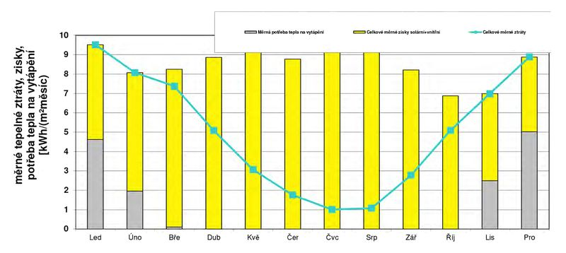

Budeme stavět dvoupodlažní pasivní dům z vápenopískových cihel v neofunkcionalistickém stylu. V předchozím článku jsem popsal, jak vznikala studie. V tomto článku bych chtěl ukázat výsledek, zhodnotit co se povedlo a co by mohlo být lepší. Následuje průvodní zpráva studie doplněna půdorysy a pohledy.
Základní charakteristika
Rodinný dům je navržený na pozemku investora v lokalitě s probíhající výstavbou samostatně stojících rodinných domů. Pozemek má rovinatý charakter s jen mírnou svažitostí směrem od severu k jihu a v současné době je porostlý trávou a je bez oplocení na Z a S straně a se stávajícím oplocením na J a V straně. Na západní straně pozemek sousedí s příjezdovou cestou, ze které vede na pozemek stávající sjezd a kde jsou i přípojná místa na inženýrské sítě. Jedná se o lokalitu bez památkové péče, která není v ochranném pásmu CHKO.
Hlavní vstup a vjezd na pozemek zůstává stávající s napojením na příjezdovou komunikaci. Navrženo je mírné rozšíření sjezdu, aby byl vstup a vjezd na pozemek bezpečnější a pohodlnější. Za bránou je navržená zpevněná plocha krytá střechou sloužící jako krytá cesta ke vstupním dveřím do domu a krytý prostor pro parkování dvou osobních automobilů. Východně od této zpevněné plochy je navržený dvoupodlažní rodinný dům doplněný na severní straně jednopodlažním objektem nevytápěného skladu. Umístění domu je zvoleno tak, že jeho uliční fasáda je 6 m od uliční hranice parcely a severní fasáda je 3,5 m od severní hranice parcely. Na jižní a východní straně domu je v návaznosti na obývací pokoj umístěná terasa krytá na jižní straně vysunutou lodžií a na východní straně pergolou. Oplocení pozemku směrem do ulice bude designové s brankou a bránou s el. otvíráním na dálkové ovládání, s podezdívkou z pohledového betonu a drátěnými výplněmi a s integrovaným přístřeškem pro nádoby na komunální odpad. Oplocení pozemku na jižní a východní straně je stávající drátěné na ocelových sloupcích. Na severní straně je navrženo drátěné oplocení na ocelových sloupcích po dohodě s vlastníkem sousedního pozemku.
Navržený rodinný dům je samostatně stojící dvoupodlažní nepodsklepený dům s rovnou střechou. Dům je navržený tak, aby odpovídal požadavkům na životní styl investorů a na kvalitní soudobou architekturu. Zastavěná plocha (pouze rodinný dům) je 142,80 m2, včetně objektu skladu a krytého stání je 251,50 m2. Dům je navržený v energeticky pasivním standardu. Vzhledem k tomu bylo optimalizováno jeho natočení ke světovým stranám a umístění domu na pozemku, které navíc využívá i propojení domu s terasou a využívá výhledy do zahrady a do krajiny. Návrh domu se svým umístěním, tvarem i velikostí snaží harmonicky začlenit do okolního charakteru zástavby a svým charakterem navazuje na okolní styl bydlení v rodinných domech obklopených zahradami. Svým umístěním dodržuje předepsané odstupové vzdálenosti a sousední domy neomezuje zastíněním ani jiným způsobem.
Architektonické a výtvarné řešení
Navržený rodinný dům je samostatně stojící dvoupodlažní nepodsklepený dům s rovnou střechou skrytou za nízkou atikou. Svojí architekturou navazuje na silnou tradici brněnského funkcionalismu. Tvar domu vychází ze základního tvaru kvádru, do kterého je vykrojená ve druhém podlaží uliční nárožní lodžie. Dále také jižní lodžie přes celou délku fasády a také v prvním podlaží volný prostor před velkoplošnou jižní prosklenou plochou. Dvoupodlažní hmotu domu doplňuje na severní a západní straně jednopodlažní objekt skladu a krytého stání. Kryté stání a sklad mají rovnou střechu s plechovou krytinou. Tato střecha na severním okraji obloukem plynule přechází do stěny tvořící hranici pozemku. Střecha krytého stání je v místě mezi bránou a vstupními dveřmi do domu perforovaná velkým kruhovým otvorem. Stejně velkým kruhovým otvorem je perforovaná také severní fasáda a tvoří okno do prostrou schodiště. Na východní straně dům doplňuje pergola se subtilní kovovou konstrukcí a překrytím vodě nepropustnou plachtou. Dům bude mít bílou omítku, se kterou budou v kontrastu rámy oken v tmavě šedé barvě antracitu, což bude i barva pro zábradlí, sloupy a kovové části oplocení. Třetí doplňkovou barvou je tmavě modrá použitá na vstupní dveře s kruhovým okénkem, na venkovní textilní screenové rolety a na plachtu kryjící pergolu. Zpevněné plochy jsou navržené dlážděné kamenem (žulové odseky) nebo eventuálně betonovými dlaždicemi. Terasa je navržená dřevěná např. z modřínových terasových prken. Do zelené plochy mezi dům a uliční oplocení je navržený dominantní strom např. Magnólie, jehož pozadí bude tvořit bílá plocha fasády bez oken.
Hlavní vstup do domu je krytý střechou nad krytým stáním pro dva automobily. Zpevněná plocha před domem navazuje na vjezd a vstup na pozemek a je z ní přístup do domu, dále vstup do skladu a také jižním směrem přístup na terasu kolem domu a dále do zahrady. Vnitřní prostory domu jsou navrženy v jednoduchém a účelném dispozičním členění na dvě základní části. Severní “nárazníkovou” zónu se zádveřím, technickou místností, koupelnou, schodištěm, skladem a spíží v prvním podlaží a s šatnou a dvěma koupelnami v druhém podlaží. Všechny obytné místnosti jsou umístěné v jižní části domu s okny umístěnými na jižní fasádě a na východní fasádě. Na vstup do domu a prostorné zádveří navazuje v přímé ose krátká chodba vedoucí do hlavního obytného prostoru s částí kuchyňskou, jídelní a obývací. Ze zádveří je přístupná technická místnost. Z chodby je přístupná pracovna/pokoj pro hosty, koupelna, hlavní obytný prostor a schodiště do druhého podlaží. Hlavní obytný prostor má půdorysně tvar písmene L a je bohatě prosklený jižním a východním směrem, kudy nabízí propojení se zahradou a výstupy na jižní i východní terasu. Větší část tohoto prostoru je věnovaná jižní obývací a jídelní části s krbovým tělesem umístěným v centrální poloze domu. Menší východní část obytného prostoru je věnovaná kuchyni, která je opticky oddělená jednak umístěním za rohem a jednak pultem s posezením navazujícím na pracovní plochu kuchyňské linky. Na východní fasádě, těsně navazuje na pracovní plochu kuchyňské linky velké okno nabízející výhled východním směrem do zahrady. Schodiště je dvouramenné s podestou nad níž je umístěné velké kruhové okno. V druhém podlaží je v páteřní poloze domu opět chodba. Je prosvětlená balkonovými dveřmi vedoucími na nárožní lodžii a je z ní přístup do tří pokojů na jižní straně domu. Jsou to dva dětské pokoje a ložnice rodičů. Všechny tyto pokoje mají velké prosklení jižním směrem s přístupem na prostornou jižní lodžii. Ložnice má navíc svoji vlastní šatnu a přes chodbu přístupnou hlavní koupelnu. Druhá menší koupelna bude sloužit především pro zbývající dva pokoje. Sklad přístupný z chodby bude sloužit pro potřeby celé domácnosti. Jižní lodžie je navržená tak, aby rozšiřovala obytný prostor pokojů ve druhém podlaží a současně svými přesahy účinně stínila velké jižní prosklené plochy v obou podlažích před silným letním sluncem. Nad všemi prosklenými plochami na jižní a východní fasádě budou také umístěné podomítkové boxy pro montáž venkovních textilních screenových rolet. Ty umožní účinně stínit i slunce v nižší poloze (mimo letní období, ranní a večerní čas).
Konstrukční řešení
Rodinný dům je navržený jako masivní zděná stavba (z vápenopískových bloků) se stropy ze železového betonu. Pro zateplení stěn i stropů budou použité přednostně difúzně otevřené tepelné izolace. Založení domu bude na železobetonové desce uložené na vrstvě z granulátu pěnoskla s respektováním hladiny spodní vody. Veškeré rozvody vzduchotechniky budou vedené ve snížených podhledech umístěných v páteřní poloze domu.
Energetické řešení
Návrh rodinného domu počítá s realizací stavby v energeticky pasivním standardu. Pro dosažení tohoto vysokého standardu bude zapotřebí pečlivě provést následující projekční práce, dodržet požadavky na navržené konstrukce, materiály, detaily, vzduchotěsnost apod. Výsledná energetická bilance domu by se měla co nejvíce přiblížit 20 kWh/(m2a) potřeby tepla na vytápění. Pro maximalizování pasivních solárních zisků je nejvíce prosklených ploch orientováno na jižní stranu. Objekt bude kvalitně zateplen s eliminací tepelných mostů (součinitel prostupu tepla konstrukcí bude cca do 0,1 W/m2K), bude řešen vzduchotěsně s kvalitními okny s izolačními trojsky a s rekuperační jednotkou napojenou na systém řízeného větrání. Zdrojem tepla je uvažováno tepelné čerpadlo napojené na integrovaný zásobník tepla umístěný v technické místnosti. Vytápění bude řešeno nízkoteplotním systémem napojeným na podlahové topení. Dům bude vybavený centrálním vysavačem a změkčovačem vody umístěnými v technické místnosti. Ovládání motorků stínícího systému a dalších elektronických zařízení bude řešeno v další fázi projektu, pravděpodobně přes centrální řídící jednotku.

Tímto končí text průvodní zprávy studie.
Co je jinak oproti zadání
- Místo klasických radiátorů bude dům vytápěn podlahovým topením. Měli jsme zbytečnou obavu, že podlahovka by nefungovala dobře s dřevěnou podlahou. Pokud se zvolí vhodná podlaha, mělo by to fungovat bez problému. To, že podlahovka způsobuje zdravotní komplikace, je také mýtus, pokud není teplota vody příliš vysoká.
- Místo žaluzií použijeme screenové rolety.
- V zadání jsme to přehnali s velikostí technické místnosti. Místo toho budeme mít sklad, kde bude dílenský ponk a úložné prostory. Podobně jsme to přehnali i s šatnou, která bude o poznání menší.
- Chtěli jsme rovné schodiště. Místo toho budeme mít dvouramenné schodiště s podestou a velkým kulatým oknem, které jsme si oblíbili.
- Spíž nebude mít posuvné dveře. Vstup do spíže bude zabudovaný v kuchyňské stěně.
- Koupelna v patře není propojena s ložnicí, ale nachází se přímo naproti přes chodbu.
- Ložnice sousedí s dětským pokojem, ale zeď bude zvukově zaizolována.
- Velká šatna nemá okno ani toaletní stolek s křesílkem - ty mohou být případně v ložnici.
Co se nám nejvíc líbí
- Maximálně efektivní využití místa na pozemku, aby zahrada byla co největší. Praktické umístění skladu a parkovacího stání.
- Rovná střecha a plnohodnotné horní patro bez šikmin.
- Stínění celé jižní stěny pomocí přesahů, aby se dům v létě nepřehříval. Přesahy mohou sloužit i jako úkryt před nepříznivým počasím.
- Terasa s pergolou v blízkosti kuchyně, na východní straně, kde bude stín a soukromí.
- Praktické dispoziční řešení. Všechny pokoje umístěné na jižní straně, kde bude dostatek světla.
- Zázemí oddělené chodbou od obytných prostor. ZTI koncentrované v jednom místě blízko sebe.
- Prostorný obývák propojený se zahradou díky velkým oknům. V domě jsou všechna okna francouzská.
- Kuchyně součástí obýváku, ale zároveň “schovaná” za rohem.
- Spíž pod schody pro skladování potravin.
- Velká knihovna přes celou stěnu obýváku.
- Krb uprostřed domu. Krbová vložka na pelety je pro nás ideální, protože funguje na dálkové ovládání. Peletová kamna s nízkým výkonem jsou do pasivního domu ideální. Neměly by dům příliš přehřívat.
- Pracovna sloužící zároveň jako hostinský pokoj a ložnice na stáří.
- Ložnice s malou šatnou a lodžií, odkud bude pěkný výhled na zahradu a do krajiny.
- Velké dětské pokoje propojené posuvnými dveřmi.
- Velká rohová vana v koupelně.
- Dostatek úložných prostor.
Co by mohlo být lepší
- Hodilo by se samostatné WC v přízemí.
- Chybí přirozené denní světlo ve dvou koupelnách.
- Uvítali bychom prostornější zádveří.
- Francouzská okna až do stropu.
- Balkonové dveře západní lodžie přes celou šířku chodby.